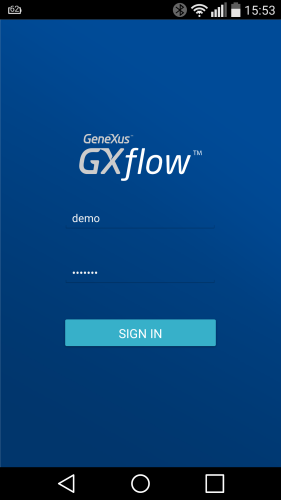

GXflow Client for Smart Devices
GXflow client for Smart Devices is an example of Smart Devices application aimed to provide some of the functionalities of the GXflow Client, to the end users. The operations a typical end user can execute in the GXflow client for Smart Devices are: starting new processes as well as visualizing and executing his pending tasks. Android Screen Captures iOS Screen Captures See AlsoHowTo: Configuring GXflow For Smart Devices
|


| Backlinks | |
| GXflow Software Requirements | |
| HowTo: Configuring GXflow For Smart Devices | My first BPM Application for Smart Devices |